Small Azure Project: Setting Up Users, Groups, and Licenses in Microsoft Entra ID, Azure AD
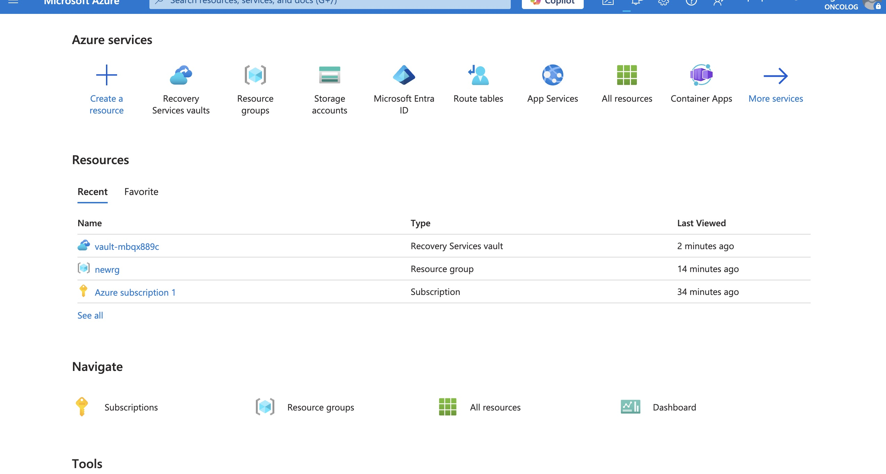If you're starting your career as a Cloud Engeneer, this project is a great way to build foundational knowledge of Azure resources. Understanding how Azure objects—such as resource groups, virtual networks, storage accounts, and role assignments—work together is essential for designing and managing scalable, secure cloud environments.
In my role as a cloud engineer, I work with these types of resources on a daily basis. Whether I'm deploying infrastructure as code, setting up automation scripts, or troubleshooting issues in production environments, having a strong grasp of how these components function and interact is critical. This hands-on experience not only helps streamline operations but also ensures that environments are compliant, efficient, and aligned with best practices.
In this post, we're building a small hands-on project in Microsoft Azure, where we’ll simulate a real-world identity and access management setup. This is perfect for beginners and IT professionals looking to strengthen their understanding of Microsoft Entra ID (formerly Azure AD), user/group management, and licensing.
Prerequisites
Before we start, make sure you have:
An Azure account with administrator access.
A valid Microsoft Entra ID (Azure AD) tenant — this is often created by default with your Azure account.
Some available Microsoft 365 (M365) licenses — such as E3 or E5 trial licenses (you can activate these for free during testing).
A basic understanding of Azure navigation.
🧱 What We'll Build
✅ Set up users (internal and guest)
👥 Create user groups: security groups & Microsoft 365 groups
🎯 Assign licenses to users and groups
🔁 Set up dynamic and assigned group memberships
🌍 Invite guest users to the tenant
Step 1: Sign in to Azure
Go to https://portal.azure.com and sign in with your Azure credentials.
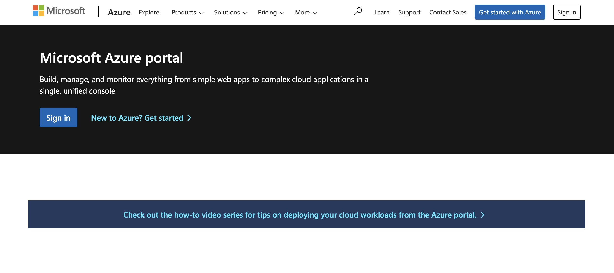Step 2: Access Microsoft Entra ID
Search for "Microsoft Entra ID" or "Azure Active Directory" in the top search bar.
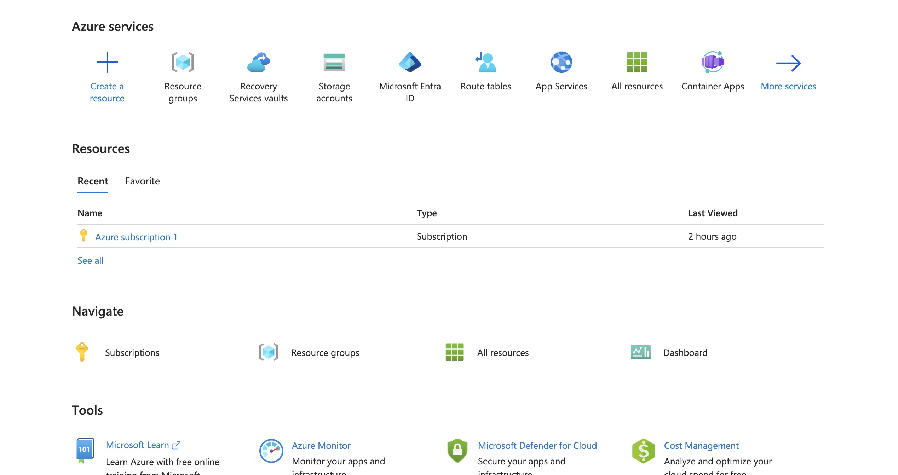Step 3: Create Users
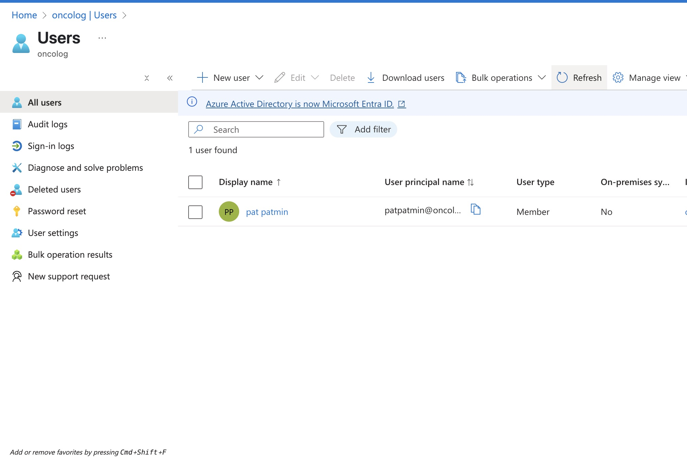In Microsoft Azure, a user is an identity that can access and interact with Azure resources. These users are managed through Azure Microsoft Entra ID, and understanding the different types of users is essential for managing access securely and effectively.
Lets get started
First, go to Microsoft Entra ID and look for Users on your left side. You will notice, you have just one user which it most likely is your tenant user account. So lets create some new users.
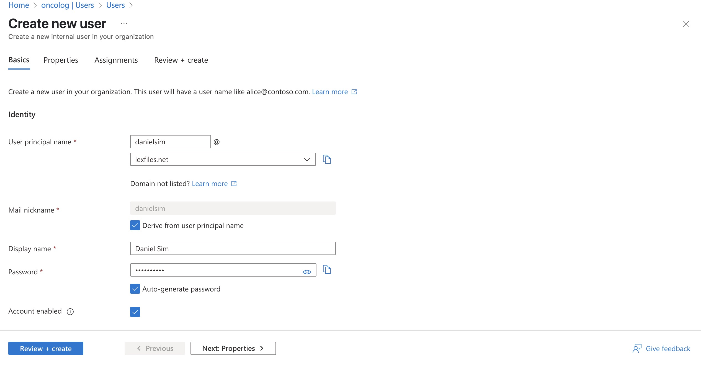We will start with our friend Daniel Sim, he just joined our company and we just have to create his credentials and later on assign his license.
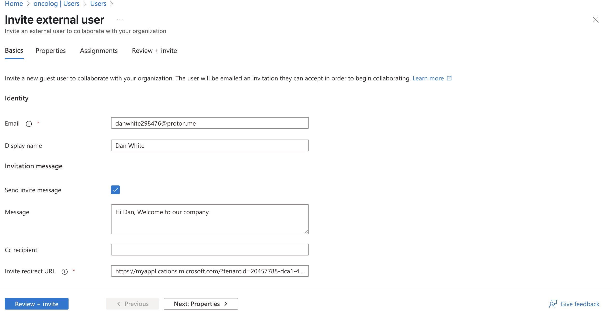Also our good friend Dan White joined our company. As you can see, he as an external user, so we sent him an Invitation. He will get an email, and he has to accept the invitation so he can join our team.Lets remember what Guest User is: A guest user is created when you invite an external user to access your Azure resources—typically through Azure AD B2B collaboration (Business-to-Business).
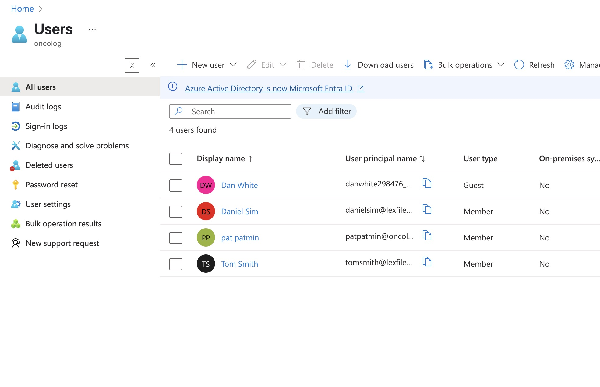We can see here a list of our users. Dan is our extarnal guest, as you can see.
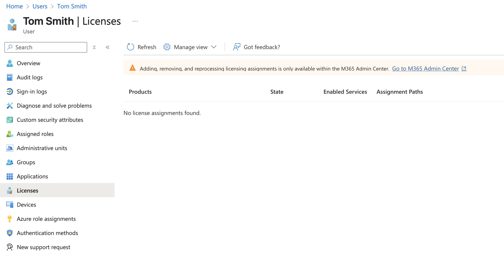Lets go to Tom Smith overview and see if he has a license. As you can see, he has not a license, so we have to assign him and to our other users a license.
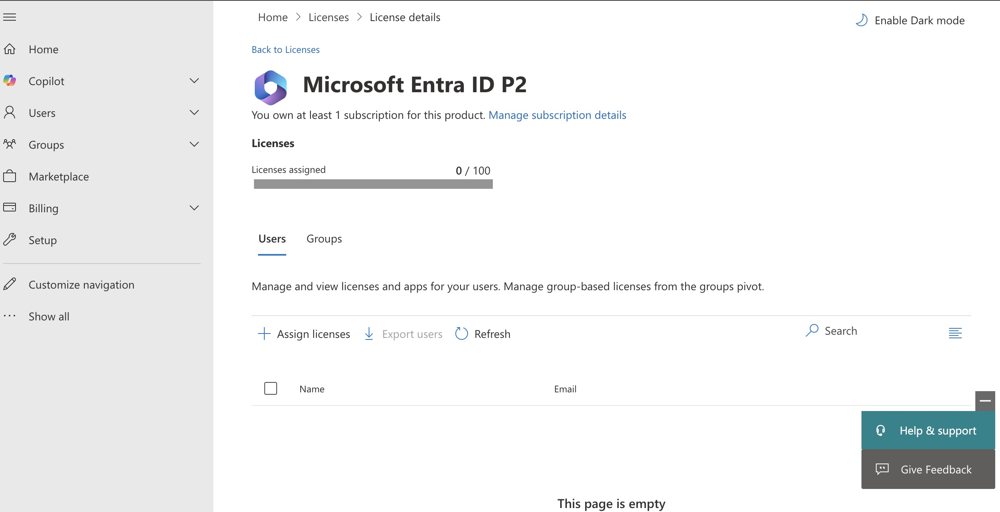Go to https://admin.cloud.microsoft.com, log in with your credentials and you should see something like this:click + Assign licenses and chose the users you want to assign a license.
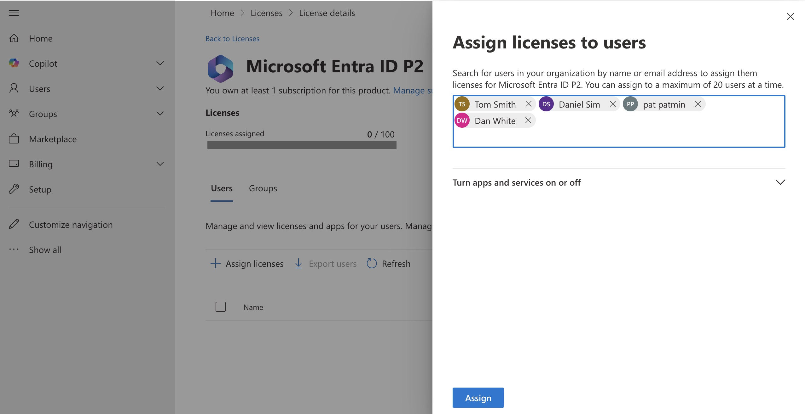You can see the users I choose to assign a license, which was the P2 license. P2 license gives you enterprise-grade identity protection and governance capabilities. It's ideal for organizations that need to:Protect against sophisticated threats (like identity theft), Automate identity governance,Secure high-privilege accounts. P2 is the highest-tier Azure AD license for identity security and governance. Who needs it? Enterprises, regulated industries, or anyone needing advanced security and what are the benefits of P2 license? PIM, Identity Protection, Access Reviews, Conditional Access (advanced).
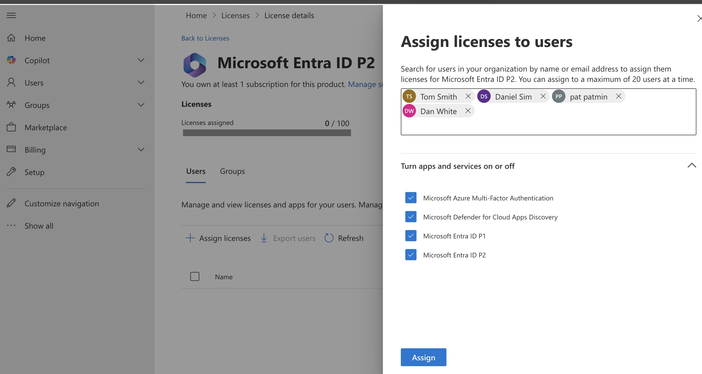 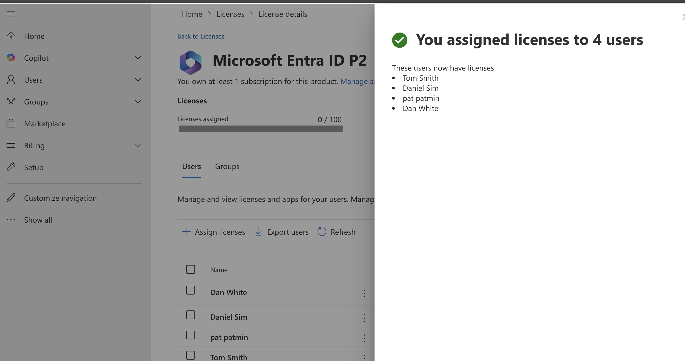At this point, we can confirm that the P2 license has been successfully assigned to our users, granting them access to advanced identity and security features such as Conditional Access, Identity Protection, and Privileged Identity Management.
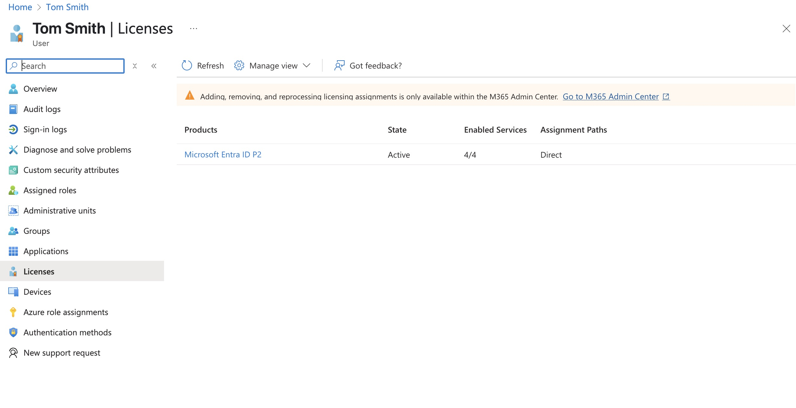Now let’s check whether one of our users has a license assigned. In this case, I’ve selected a user named Tom. As shown, we can confirm that the Azure AD Premium P2 license is indeed assigned to his account.
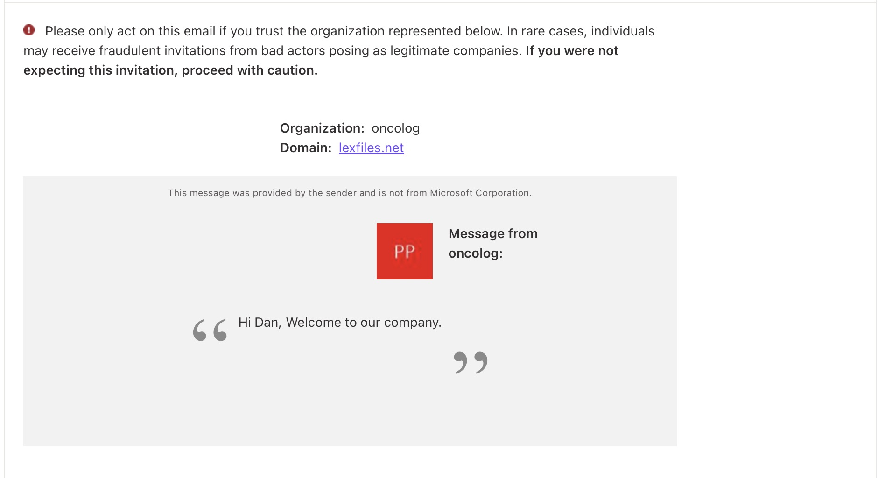Let’s take a look at the email invitation our guest user received. As you can see, the message includes a security warning advising the recipient to proceed with caution if they weren’t expecting the invitation. This is an important part of Azure’s identity protection, helping prevent unauthorized access through phishing or unexpected invitations.
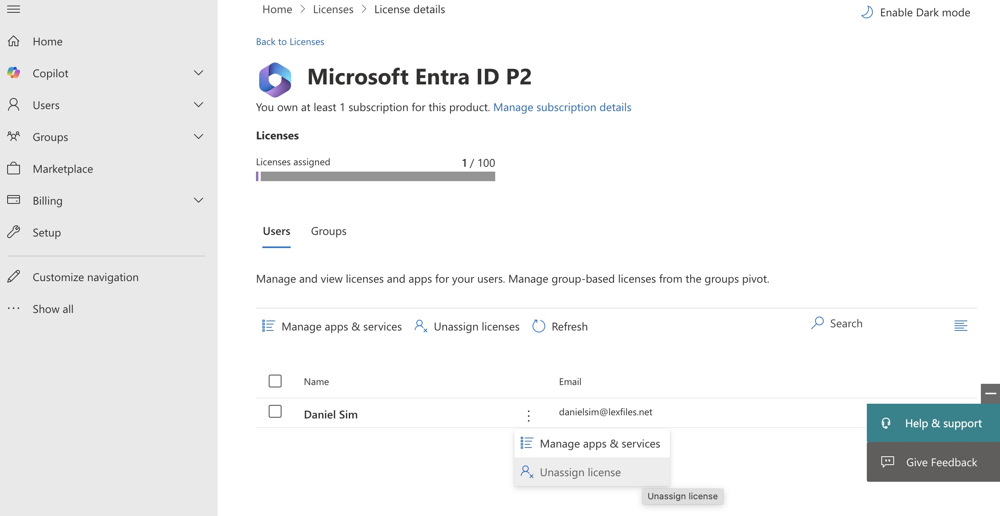During your career as a cloud engineer, you’ll often encounter tasks related to user lifecycle management — including offboarding users who are leaving the company. One of the most common responsibilities in this process is removing licenses assigned to users. When an employee leaves, it's important to revoke any active licenses (such as Microsoft 365, Azure AD Premium, or Dynamics) to free up resources, reduce costs, and maintain security. These licenses are often granted during onboarding to give users access to tools and services they need for their job — but once they leave, that access must be properly revoked.
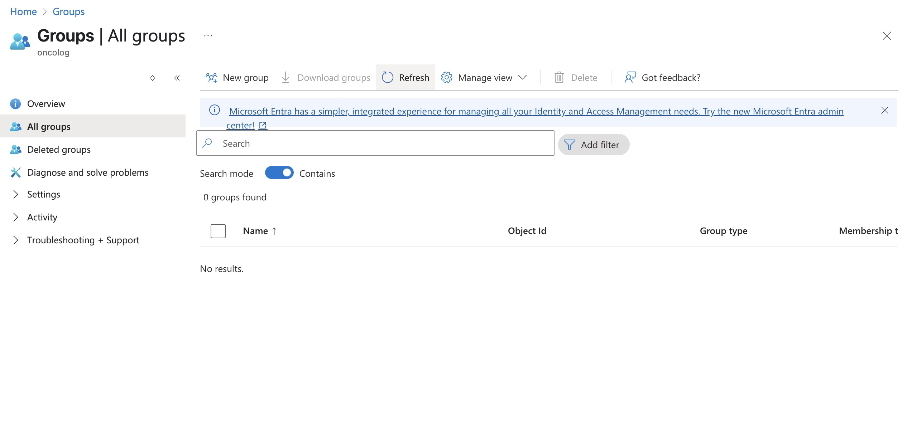In Azure, groups are used to organize users, devices, and even other groups, making it easier to manage access, policies, and licenses at scale. Instead of assigning permissions or licenses to individual users one by one, you can assign them to a group — and everyone in that group automatically inherits those settings. Azure supports two main types of groups:
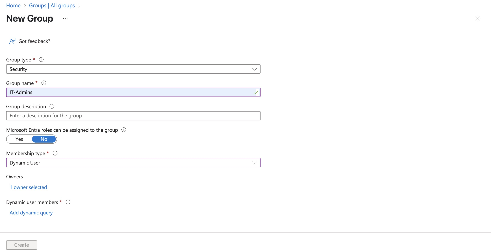Security Groups: Used primarily for managing access to Azure resources. For example, you can assign a security group to a role (such as Contributor or Reader) in Azure RBAC. They’re ideal for controlling permissions across Azure services, apps, and administrative tasks.
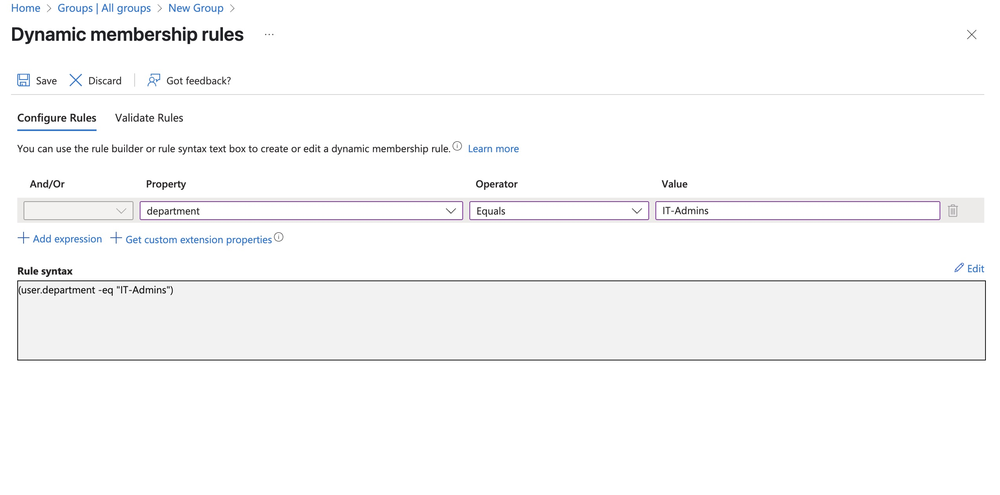Remember that when using dynamic groups , a premium P1 license needs to be assigned to the user.
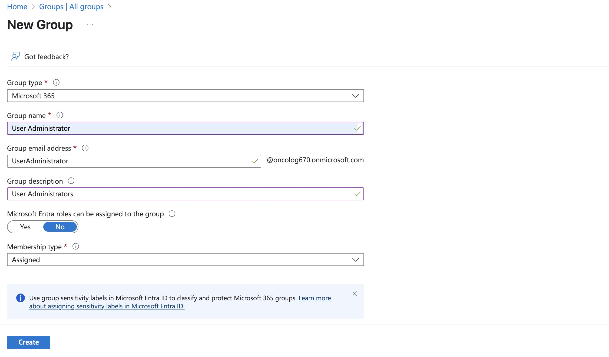Microsoft 365 Groups: Designed for collaboration. These groups not only manage user access but also come with shared tools like a mailbox, calendar, SharePoint site, Planner, and Microsoft Teams integration. They are perfect for team-based collaboration within the Microsoft 365 ecosystem.
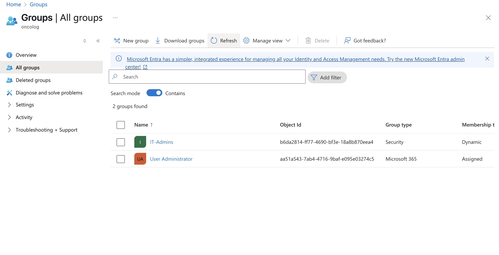We can see now the 2 groups we created, security group and M365 group.To make this excersice not too long,we will make use of the resources we created here.
🧠 Which One Should You Use?